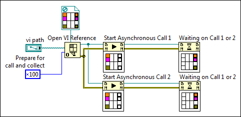

When you make a standard call to a target VI with either a subVI node or the Call By Reference node, data flow stops at that node until the target VI returns its results, at which point data flow continues from the output terminals of the node.
In contrast, an asynchronous call to a subVI starts execution of the subVI while allowing data flow to continue in the calling VI. You might want to call subVIs asynchronously when the calling VI does not require the results of the subVI immediately. In those cases, the asynchronous call can drastically improve the execution time of the calling VI by allowing the subVI to run in parallel with the calling VI. Refer to the following list for examples of programming scenarios that benefit from asynchronous VI calls:
Open example�
 Find related examples
Find related examplesIn LabVIEW, all asynchronous VI calls consist of a combination of the following steps.
To make an asynchronous VI call, you must determine which of the following usage models applies to your use case. Refer to the following topics for more information about implementing each model:
While most use cases for asynchronously calling VIs do not require knowledge of how LabVIEW manages asynchronous VI calls, understanding the asynchronous call pool can help you control performance and design deterministic applications. When you prepare a VI reference to run asynchronously by including one of the asynchronous option flags as part of the options input of the Open VI Reference function, LabVIEW creates a pool of data spaces that track data for individual calls to that VI. Because LabVIEW associates a pool of data spaces rather than a single data space to a VI reference, you can start multiple asynchronous calls with the same VI reference. Every time you use the Start Asynchronous Call node to start an asynchronous call with the VI reference, LabVIEW reserves one of the data spaces in the pool. When the VI finishes running, LabVIEW stores its outputs in the data space and marks the VI call as complete. If a Wait On Asynchronous Call node is waiting on the outputs of the called VI, LabVIEW returns the results from the data space, thereby freeing the data space for another call to the same VI.
For each VI reference, LabVIEW creates one data space in the asynchronous call pool for each CPU core on the target computer. If you start more simultaneous calls to the target VI than there are available data spaces, LabVIEW increases the size of the call pool by allocating more data spaces. Because the process of allocating data spaces does not take a deterministic amount of time, the calling VI might experience an unpredictable delay at any Start Asynchronous Call node that triggers an allocation.
To avoid unpredictable delays in VIs that must run on a real-time operating system, preallocate the number of data spaces in the call pool for a given VI reference by calling the Populate Asynchronous Call Pool method before starting any asynchronous calls. Preallocating the data spaces limits delays to the beginning of the program instead of allowing delays to occur at the Start Asynchronous Call node.
Refer to the Populating the Asynchronous Call Pool VI in the labview\examples\Application Control\VI Server\Asynchronous Call By Reference directory for more information about how the asynchronous call pool affects performance.
Open example�
Find related examples
When you want to collect the results of an asynchronous VI call, you must pass the reference to the called VI to the Wait On Asynchronous Call node. Because the Wait On Asynchronous Call node receives a reference to a VI rather than a reference to a specific data space, the node cannot collect the outputs of a specific call to the referenced VI. Instead, the node returns the outputs of any finished call to that VI. Refer to the following block diagram for a further explanation of this behavior.

As the labels suggest, when multiple Wait On Asynchronous Call nodes rely on the same VI reference, you cannot predict which node will return the outputs of a particular call to that VI reference. In the previous diagram, the top Wait On Asynchronous Call node is capable of returning the outputs of Start Asynchronous Call 2 even though it is wired to Start Asynchronous Call 1. If you want to make multiple calls to the same VI but need to keep the Start Asynchronous Call node paired with a specific Wait On Asynchronous Call node, use either of the following solutions: